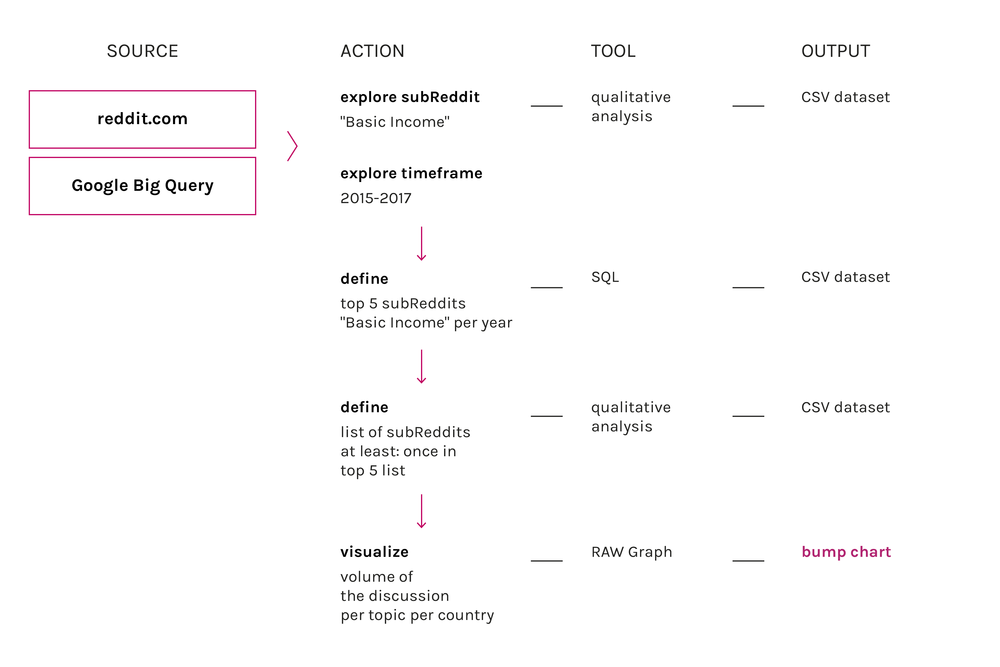

Description
The visualization shows that there are two subreddits more relevant in the discussion: r/BasicIncome, a subreddit devoted to this precise topic, and r/Futurology a subreddit of speculation about the future. It is interesting to notice what happened in the period of time between january and june 2016, while r/worldnews and r/canada registered a peak of discussion about basic income. The subreddit r/BasicIncome it’s the lowest amount of discussion, the probable reason is that in march 2016 Ontario declares it’s will to launch a basic income pilot project. Probably people that usually were writing on r/BasicIncome moved to r/Worldnews.
This tag cloud shows a selection of words that are emblematic of different aspects of r/BasicIncome, based on their appearance in a list of most-used words that weren’t seen elsewhere on Reddit. The dynamic word cloud shows the most frequent words in BasicIncome over time reflecting issues they were concerned with at different points.
Protocol
There is a huge dataset of subreddits on reddit.com that spans from 2004 to 2017. From 2015 to 2017 subreddits were available also clustered by month so this is the frame of time appropriate to have a constant sampling metric. With Google Big Query we searched in what subreddits the term basic income was used more. The query was repeated 5 times for every year (except for december 2017). Than we decided to consider only subreddits that appeared at least one time in the first five results of the query. The same dataset was used for the tag cloud, Google Big Query was useful to understand what are the typical words that appear with an higher frequency on r/BasicIncome more than any other subreddit. The query was repeated for comments of may 2015-2016-2017.